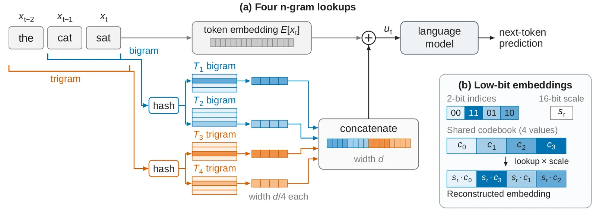
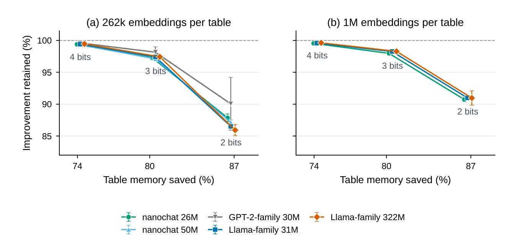
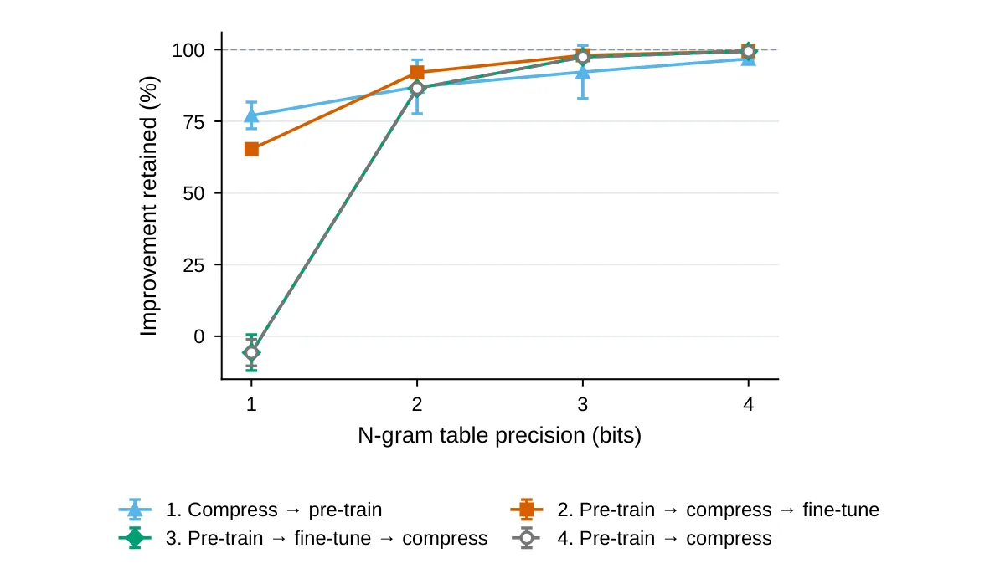
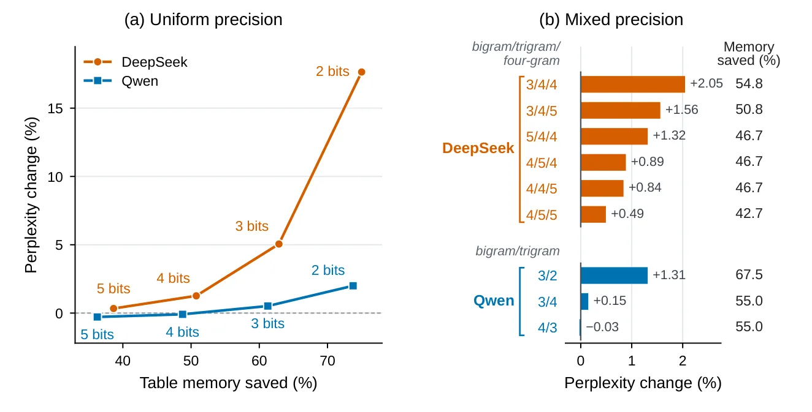

O Custo Oculto da Memória de N-gramas
Modelos de linguagem modernos, especialmente os de pesos abertos, têm adotado uma técnica para melhorar seu desempenho: tabelas de embeddings de n-gramas. Diferente dos embeddings de tokens individuais, que representam uma única palavra ou subpalavra, essas tabelas armazenam representações aprendidas de sequências curtas de tokens consecutivos, como bigramas (pares) ou trigramas (trios). A ideia é simples: ao processar um texto, o modelo recupera essas representações pré-calculadas para complementar o contexto imediato, o que ajuda na previsão do próximo token.
No entanto, essa abordagem tem um preço alto em termos de uso de memória. Como o número possível de combinações de tokens é enorme, as tabelas precisam ser massivas para cobrir o vocabulário e as sequências relevantes. Um exemplo extremo é o DeepSeek-V4.1-Flash, que aloca 196 bilhões de parâmetros apenas para sua memória de n-gramas, chamada Engram. Esse volume de memória consome recursos significativos de GPU e limita a escalabilidade desses modelos.
O problema central que os autores deste paper abordam é se é possível reduzir drasticamente esse custo de memória sem sacrificar os ganhos de performance que essas tabelas proporcionam. A premissa é que, assim como a quantização de pesos de rede neural (weights) tem sido eficaz, a quantização das próprias tabelas de lookup pode ser uma solução viável. A questão não é apenas 'podemos comprimir?', mas 'como comprimir de forma inteligente para manter a utilidade semântica dos n-gramas?'.

Mecanismo: Como Funcionam as Tabelas de N-gramas
Para entender a proposta, precisamos detalhar a arquitetura. Seguindo o método do Over-Tokenized Transformer, o modelo utiliza quatro tabelas de embeddings: duas para bigramas e duas para trigramas. Para cada token na sequência de entrada, o modelo identifica o bigrama e o trigramas que terminam naquele token. Em seguida, ele realiza quatro buscas independentes nas tabelas, recuperando quatro embeddings diferentes.
Esses quatro embeddings, cada um com dimensão d/4, são concatenados para formar um vetor de dimensão d, que é então somado ao embedding original do token atual. Matematicamente, isso pode ser descrito como: u_t = E[x_t] + Concat(T_1, T_2, T_3, T_4). As funções de hash determinam qual linha da tabela corresponde à sequência específica de tokens, permitindo que múltiplos n-gramas compartilhem o mesmo embedding se houver colisão de hash, uma técnica comum para gerenciar o espaço de estado.
A Proposta: Quantização com Codebooks e Escalas
Os autores propõem substituir o armazenamento de precisão dupla (16 bits) ou simples (32 bits) desses embeddings por uma representação de baixa precisão. A técnica central envolve dois componentes: um codebook (livro de códigos) compartilhado e fatores de escala individuais por embedding.
O codebook contém um conjunto pequeno de valores representativos. Se usarmos b bits para indexar, o codebook terá 2^b valores. Por exemplo, com 2 bits, temos 4 valores possíveis. Cada componente de cada embedding não é armazenado diretamente; em vez disso, armazena-se um índice de b bits que aponta para o valor mais próximo no codebook. Isso reduz drasticamente o espaço de bits por componente.
Escolhendo os Valores do Codebook
Os autores investigaram três famílias de codebooks para determinar a melhor estratégia de quantização. A primeira é o codebook uniforme, com valores igualmente espaçados (por exemplo, {-1, -1/3, 1/3, 1} para 2 bits). A segunda utiliza quantis de uma distribuição normal padrão, concentrando mais valores perto de zero, o que pode ser benéfico se a distribuição dos embeddings for gaussiana. A terceira, e mais sofisticada, é o codebook ajustado via algoritmo Lloyd-Max.
O método Lloyd-Max aprende os valores do codebook diretamente a partir dos embeddings treinados do modelo. Os embeddings são normalizados por sua raiz quadrada da média quadrática (RMS) para permitir o compartilhamento do codebook entre diferentes embeddings. O algoritmo itera atribuindo componentes aos valores mais próximos do codebook e atualizando os valores do codebook como a média dos componentes atribuídos. Essa abordagem 'data-driven' tende a capturar melhor a estrutura intrínseca dos dados.
Ajustando a Escala dos Embeddings
Além do codebook, a forma de calcular o fator de escala (s_r) para cada embedding individual impacta diretamente a fidelidade da reconstrução. Os autores testaram três métodos: escala baseada no máximo (maior valor absoluto do embedding), escala RMS (magnitude geral do vetor) e escala ajustada ao erro (minimizando o erro de quantização).
Os resultados preliminares indicaram que a escolha da escala é mais importante do que a escolha específica do codebook. Por exemplo, codebooks uniformes com escala baseada no máximo tiveram desempenho significativamente pior (retendo apenas 58% da melhoria de performance) comparado a codebooks ajustados ao erro, que mantiveram cerca de 86% da melhoria. Isso sugere que normalizar corretamente a magnitude de cada embedding antes da quantização é o passo mais crítico para preservar a informação.

Resultados: 4 Bits é o Ponto Doce
Os experimentos foram conduzidos em cinco modelos treinados do zero: nanochat (26M e 50M parâmetros), GPT-2-family (30M) e Llama-family (31M e 322M). Em todos os casos, as tabelas padrão tinham cerca de 262k embeddings. A métrica principal foi a porcentagem da melhoria de loss de validação (comparado a um modelo sem tabelas) que foi preservada após a compressão.
O achado mais robusto é que tabelas de 4 bits economizam aproximadamente 75% da memória da tabela enquanto retêm mais de 99% da melhoria de performance proporcionada pelas tabelas de precisão completa (16 bits). Isso é surpreendentemente eficiente. Reduzir para 3 bits ainda é viável, mas 2 bits começa a causar quedas mais perceptíveis, retendo entre 85% e 91% da melhoria, apesar de economizar 86-87% da memória.
Precisão Híbrida: Bigramas vs. Trigramas
Os autores também exploraram se bigramas e trigramas têm sensibilidades diferentes à compressão. Eles testaram combinações de bits (2, 3 e 4 bits) para cada tipo de n-grama. A conclusão é que bigramas são mais sensíveis à perda de precisão do que trigramas. Alocar mais bits para bigramas resulta em melhor retenção de performance para o mesmo custo total de memória.
A configuração híbrida ideal encontrada foi usar 4 bits para bigramas e 3 bits para trigramas. Essa combinação retém 98,9-99,4% da melhoria de performance em todos os modelos testados, enquanto economiza 77-78% da memória total das tabelas. Isso oferece um guia prático para engenheiros: não trate todos os n-gramas da mesma forma; priorize a precisão nas sequências mais curtas e frequentes.

Recuperação via Fine-Tuning
Uma limitação da quantização estática é a perda irrevogável de informação. No entanto, os autores mostraram que um período curto de fine-tuning (ajuste fino) após a compressão pode recuperar uma parte significativa da performance perdida. Isso ocorre porque o modelo pode ajustar seus outros parâmetros para compensar as imprecisões introduzidas pelos embeddings de baixa precisão. Em casos extremos de 2 bits, o fine-tuning recupera grande parte da queda, tornando a abordagem ainda mais atraente para cenários onde a memória é extremamente restrita.
Aplicação em Modelos Grandes e Reinvestimento
O estudo não se limitou a modelos pequenos. Os autores aplicaram a técnica a modelos grandes existentes, como DeepSeek-V4.1-Flash e Qwen3.8-Flash-Next. Nesses casos, a compressão para baixa precisão economizou entre 47% e 55% da memória das tabelas, com aumentos de perplexidade inferiores a 1,2%. Isso confirma que a técnica é escalável e não apenas uma curiosidade de modelos pequenos.
Além de economizar memória, os autores exploraram o conceito de 'reinvestimento'. Se você economiza 75% da memória das tabelas, pode usar esse espaço para aumentar o número de embeddings (de 262k para 1M, por exemplo). Eles descobriram que tabelas maiores, mesmo em baixa precisão, podem superar o desempenho das tabelas menores de precisão completa. Ou seja, a compressão não serve apenas para economizar, mas para permitir modelos mais expressivos com o mesmo orçamento de hardware.

Limitações e Considerações Finais
Apesar dos resultados promissores, há limitações a considerar. O estudo foca em modelos treinados do zero ou ajustados, e a generalização para arquiteturas muito diferentes pode exigir mais validação. Além disso, a recuperação via fine-tuning requer tempo de computação adicional, o que pode não ser viável em todos os ciclos de desenvolvimento. A escolha do codebook Lloyd-Max, embora eficaz, adiciona uma etapa de pós-processamento que precisa ser gerenciada.
Outro ponto é a complexidade de implementação. A recuperação de embeddings em baixa precisão requer lógica específica para multiplicar o índice pelo codebook e depois pelo fator de escala. Embora o custo computacional por token seja baixo, a latência de lookup em tabelas grandes e fragmentadas pode variar dependendo da implementação de hardware. Ainda assim, o paper estabelece que a quantização de n-gramas é uma ferramenta prática e poderosa para otimização de memória em LLMs.
Conclusão
Este paper demonstra que as tabelas de embeddings de n-gramas, uma componente chave para o desempenho de LLMs modernos, podem ser comprimidas agressivamente sem prejuízo significativo. Ao usar codebooks ajustados e escalas adequadas, é possível reduzir o uso de memória em até 75% com 4 bits, mantendo a quase totalidade da melhoria de performance. Para aplicações onde o espaço é crítico, a combinação de baixa precisão, precisão híbrida (priorizando bigramas) e fine-tuning pós-compressão oferece um caminho viável para construir modelos mais eficientes e escaláveis.
O que fica
- Tabelas de n-gramas em 4 bits economizam ~75% da memória mantendo >99% da melhoria de performance em modelos treinados do zero.
- A escolha da escala do embedding é mais crítica para a precisão do que a estrutura do codebook; escalas ajustadas ao erro superam as uniformes.
- Bigramas são mais sensíveis à compressão que trigramas; alocação híbrida (4 bits para bigramas, 3 para trigramas) é otimizada.
- Em modelos grandes (DeepSeek, Qwen), a compressão economiza 47-55% da memória com impacto mínimo na perplexidade (<1,2%).
Paper original: Low-Bit N-Gram Embeddings for Language Models
Comentários
Nenhum comentário ainda. Seja o primeiro.